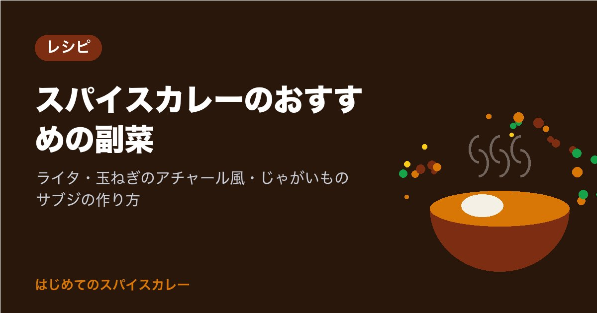

スパイスカレーのおすすめの副菜｜ライタ・玉ねぎのアチャール風・じゃがいものサブジの作り方

スパイスカレーを作れるようになると、次に欲しくなるのが「となりに添える一品」ではないでしょうか。
副菜があると、カレーの辛さや濃さを調整しながら食べられ、味の変化も楽しめます。お店のカレーが「ひと皿で満足」なのは、副菜の力も大きいのです。
この記事では、はじめてでも作りやすい副菜を3品、2〜3人分の材料表と手順つきで紹介します。どれも、カレーを煮込んでいる間に作れるものばかりです。
副菜の役割と選び方
スパイスカレーの副菜には、大きく3つの役割があります。
| 役割 | 例 | カレーとの関係 |
|---|---|---|
| 冷やす・やわらげる | ヨーグルトのライタ | 辛さをやわらげ、口の中をさっぱりさせる |
| 酸味と食感を足す | 玉ねぎのアチャール風 | 濃い味の合間に、さっぱりと噛む楽しさを加える |
| ボリュームを出す | じゃがいものサブジ | 野菜のおかずとして満足感を増やす |
この3つを1品ずつそろえると、ひと皿の中で「冷たい・酸っぱい・ほくほく」の変化が生まれます。もちろん、1品だけでも十分です。まずは、作りやすそうなものから試してみてください。
カレー本体は、基本のチキンカレーの作り方｜3つのスパイスで作るはじめてのスパイスカレーを参考にすると、この記事の副菜とよく合います。
きゅうりのライタ（ヨーグルトの副菜）
ライタは、ヨーグルトに野菜を混ぜた、インドなどで食べられている冷たい副菜です。辛いカレーのとなりに置くと、口の中をやさしく整えてくれます。火を使わないので、いちばん手軽です。
材料（2〜3人分）
| 材料 | 分量 |
|---|---|
| 無糖のプレーンヨーグルト | 200g |
| きゅうり | 1本 |
| 塩 | 小さじ1/3（味を見て調整） |
| クミンパウダー | 小さじ1/4 |
| 黒こしょう（お好みで） | 少々 |
| 刻んだミントまたはパクチー（お好みで） | 適量 |
作り方
- きゅうりは粗みじん切りか、粗くすりおろします。すりおろした場合は、軽く水気を切ります。
- ボウルにヨーグルトを入れ、なめらかになるまで混ぜます。
- きゅうり、塩、クミンパウダーを加えて混ぜ、味を見て塩で調えます。
- 器に盛り、黒こしょうやハーブを散らします。食べる直前まで冷蔵庫で冷やします。
ヨーグルトを使うので、作ったら冷蔵庫に入れ、その日のうちに食べ切ってください。常温に長く置くのは避けましょう。きゅうりの代わりに、トマトや玉ねぎで作るのもおいしいです。
紫玉ねぎのアチャール風（さっぱりした酸味の副菜）
アチャールは、野菜をスパイスと酸味で漬けた、インドの漬物のような副菜です。本格的には油やたくさんのスパイスを使いますが、ここでは家にある材料で作れる「アチャール風」を紹介します。
材料（2〜3人分）
| 材料 | 分量 |
|---|---|
| 紫玉ねぎ（なければ普通の玉ねぎ） | 1/2個 |
| 酢（米酢または穀物酢） | 大さじ2 |
| レモン汁 | 大さじ1 |
| 塩 | 小さじ1/3 |
| 砂糖 | 小さじ1/2 |
| ターメリック | 小さじ1/4 |
| チリパウダーまたは一味唐辛子（お好みで） | 少々 |
| サラダ油 | 小さじ1 |
| クミンシード | 小さじ1/2 |
作り方
- 紫玉ねぎは繊維に沿って薄切りにし、水に5分ほどさらしてから、しっかり水気を切ります。
- ボウルに酢、レモン汁、塩、砂糖、ターメリック、チリパウダーを入れて混ぜます。
- 小さなフライパンにサラダ油とクミンシードを入れ、弱火で加熱します。シードのまわりに泡が出て香りが立ったら、すぐに火を止めます（焦げると苦くなるので注意）。
- 熱い油ごと2のボウルに加え、玉ねぎを入れて全体をあえます。
- 15分以上置いて、味をなじませてから食べます。
玉ねぎに色が移ってきれいなピンク色になるので、盛り付けのアクセントにもなります。保存するときは清潔な容器に入れて冷蔵し、2〜3日を目安に食べ切ってください。ホールスパイスの扱いは、ホールスパイスとパウダーの使い分け｜入れるタイミングと香りの違いもあわせてどうぞ。
じゃがいもとカリフラワーのサブジ（野菜の蒸し炒め）
サブジは、野菜をスパイスで炒め煮にしたおかずです。じゃがいもとカリフラワーの組み合わせは定番で、ほくほくした食感がカレーのとなりでしっかり満足感を出してくれます。
材料（2〜3人分）
| 材料 | 分量 |
|---|---|
| じゃがいも | 中2個 |
| カリフラワー | 1/2株（約200g） |
| サラダ油 | 大さじ1と1/2 |
| クミンシード | 小さじ1 |
| しょうが（みじん切り） | 1かけ |
| ターメリック | 小さじ1/2 |
| コリアンダーパウダー | 小さじ1 |
| チリパウダー（お好みで） | 少々 |
| 塩 | 小さじ1/2（味を見て調整） |
| 水 | 大さじ3 |
| レモン汁 | 小さじ1 |
作り方
- じゃがいもは皮をむいて2cm角に切り、水にさらします。カリフラワーは小房に分けます。
- フライパンにサラダ油とクミンシードを入れて弱めの中火にかけ、泡が出て香りが立つまで加熱します。
- しょうがを加えて10秒ほど炒め、水気を切ったじゃがいもを入れて中火で2〜3分炒めます。
- 火を弱め、ターメリック、コリアンダーパウダー、チリパウダー、塩を加えて全体にまぶします。
- カリフラワーと水を加え、ふたをして弱火で8〜10分、ときどき混ぜながら蒸し炒めにします。
- じゃがいもに竹串がすっと通ったらふたを外し、水分を飛ばすように1〜2分炒めます。レモン汁を回しかけ、味を見て塩で調えます。
じゃがいもは中心までしっかり火を通してください。途中で水分がなくなって焦げそうなときは、水を大さじ1ずつ足します。カリフラワーの代わりに、いんげんやブロッコリーでも作れます。
盛り付けと食べ方のコツ
副菜がそろったら、盛り付けも楽しんでみましょう。
- 大きめの平皿に、ごはんを中央か片側に盛り、カレーを横に流し、副菜を小さく2〜3か所に置く
- ライタはカレーと混ざらないように、少し離して置くか、小さな器に入れる
- アチャール風の玉ねぎは、彩りとして最後に少量をのせる
食べるときは、はじめはカレーだけ、次にライタを混ぜて、最後にサブジと一緒に、と順番を変えると、ひと皿で何通りもの味が楽しめます。お店のように盛り付けたいときは、少し深さのある大きめのワンプレート皿があると便利です。
保存のときに気をつけたいこと
副菜ごとに、保存の目安が違います。
- ライタ：生のヨーグルトを使うので、作った日のうちに食べ切ります。残った分は冷蔵し、翌日には持ち越さないのが安心です
- アチャール風：酢と塩が入っているので、清潔な容器で冷蔵すれば2〜3日が目安です。食べる分だけ清潔なスプーンで取り分けます
- サブジ：粗熱を取ってから冷蔵し、2日ほどを目安に。温め直すときは、全体がしっかり熱くなるまで加熱します
カレー本体の保存や冷凍については、スパイスカレーの作り置きと冷凍のコツで詳しく紹介しています。副菜に使うスパイスは、カレーと同じものがほとんどなので、特別に買い足す必要はありません。
まとめ
スパイスカレーの副菜は、「冷やす」「酸味を足す」「ボリュームを出す」の3つの役割を意識すると選びやすくなります。
- きゅうりのライタは火を使わず、辛さをやわらげる
- 紫玉ねぎのアチャール風は、酢とクミンの香りでさっぱり
- じゃがいもとカリフラワーのサブジは、ほくほくの満足感
- ヨーグルトの副菜は当日中、ほかも2〜3日を目安に冷蔵で
まずは、カレーを煮込んでいる10分で作れるライタから、試してみませんか。あなたのカレーに、いちばん合いそうな副菜はどれでしょうか。
まずは、家にあるスパイスを確かめるところから。クミン・コリアンダー・ターメリックの3つがそろえば、次の休みに最初の1皿に挑戦できます。
あなたなら、どのカレーから作ってみますか？
最後まで読んでくださり、ありがとうございました。